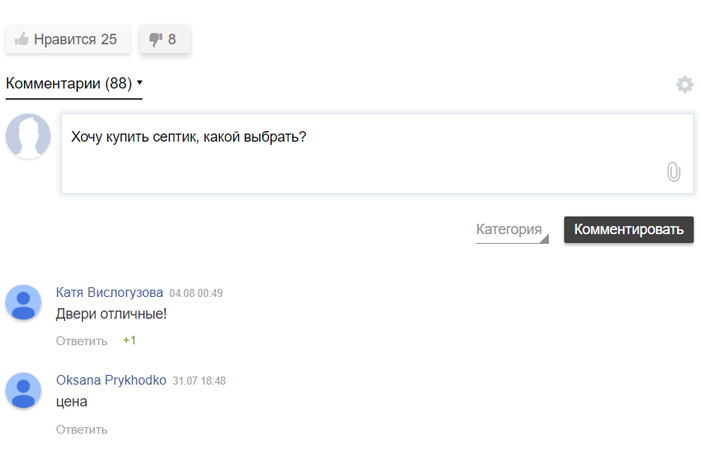

h1 Монтаж станции Биодека
Для того чтобы за городом было столь же комфортно, как и в городской квартире, необходим не только современный уютный интерьер и удобная мебель, но и все бытовые коммуникации – водопровод, электричество и канализация.
h2 Монтаж септика БиоДека в котлован
Коснемся основных моментов установки станции Биодека. После прочтения данной статьи Вы сможете сами для себя решить, что больше подходит Вам- заказать монтаж БиоДеки под ключ или же выполнить установку самостоятельно.
Маркированный список:
- гораздо проще, дешевле,
- с точки зрения нервов,
- с точки зрения денег.
И немаркированный список:
гораздо проще, дешевле,
- с точки зрения нервов,
- с точки зрения денег.
h3 Врезка подводящего трубопровода
После утрамбовки выполняется врезка подводящего патрубка станции. Некоторые компании герметизируют на манжету, что в корне неверно, - если первое время можно поверить, что эта манжета будет как-то функционировать при врезке в плоскую стенку.
{kind=link}
фото: установка септика Биодека
h4 Врезка подводящего трубопровода
После утрамбовки выполняется врезка подводящего патрубка станции. Некоторые компании герметизируют на манжету, что в корне неверно, - если первое время можно поверить, что эта манжета будет как-то функционировать при врезке в плоскую стенку.
| Название септика | Ширина | Высота |
|---|---|---|
| Биодека 3 | 1500 | 2500 |
| Биодека 5 | 1700 | 2700 |
| Биодека 8 | 1900 | 3100 |
h4 Врезка подводящего трубопровода
После утрамбовки выполняется врезка подводящего патрубка станции. Некоторые компании герметизируют на манжету, что в корне неверно, - если первое время можно поверить, что эта манжета будет как-то функционировать при врезке в плоскую стенку.
В зависимости от региона на определенную глубину также станция обкладывается теплоизоляцией не менее 30мм (как по паспорту). В Петербурге и Москве глубина теплоизоляции составляет примерно 60см, на Урале глубина увеличивается.
После утрамбовки выполняется врезка подводящего патрубка станции. Некоторые компании герметизируют на манжету, что в корне неверно, - если первое время можно поверить, что эта манжета будет как-то функционировать при врезке в плоскую стенку.
{kind=link}
{kind=link}
{kind=link}
После утрамбовки выполняется врезка подводящего патрубка станции. Некоторые компании герметизируют на манжету, что в корне неверно, - если первое время можно поверить, что эта манжета будет как-то функционировать при врезке в плоскую стенку. Но в случае цилиндрического корпуса все намного
Согласно паспорту, в комплект станции входит патрубок 110 мм - полипропиленовая серая труба и треугольный полипропиленовый пруток 7мм. Не путайте- рыжая для наружной канализации, которая в земле прокладывается, производится из поливинилхлорида. С помощью полипропиленового прутка патрубок обваривается и герметизируется (нужен термофен и специальная насадка). Лучше всего для выполнения данных работ каждый. Согласно паспорту, в комплект станции входит патрубок 110 мм - полипропиленовая серая труба и треугольный полипропиленовый пруток 7мм. Не путайте- рыжая для наружной канализации, которая в земле прокладывается, производится из поливинилхлорида. С помощью полипропиленового прутка патрубок обваривается и герметизируется (нужен термофен и специальная насадка). Лучше всего для выполнения данных работ каждый.
Согласно паспорту, в комплект станции входит патрубок 110 мм - полипропиленовая серая труба и треугольный полипропиленовый пруток 7мм. Не путайте- рыжая для наружной канализации, которая в земле прокладывается, производится из поливинилхлорида. С помощью полипропиленового прутка патрубок обваривается и герметизируется (нужен термофен и специальная насадка). Лучше всего для выполнения данных работ каждый. Согласно паспорту, в комплект станции входит патрубок 110 мм - полипропиленовая серая труба и треугольный полипропиленовый пруток 7мм. Не путайте- рыжая для наружной канализации, которая в земле прокладывается, производится из поливинилхлорида. С помощью полипропиленового прутка патрубок обваривается и герметизируется (нужен термофен и специальная насадка). Лучше всего для выполнения данных работ каждый.
Как не ошибиться с выбором септика?
Получите бесплатную консультацию наших специалисtтов, которая поможет
вам определится с выбором подходящего септика.
Материалы по теме
Пошаговая инструкция, фото, видео и комментарии экспертов помогут вам выбрать септик и не прогореть!
Пошаговая инструкция, фото, видео и комментарии экспертов помогут вам выбрать септик и не прогореть!
Пошаговая инструкция, фото, видео и комментарии экспертов помогут вам выбрать септик и не прогореть!
Комментарии к материалу
